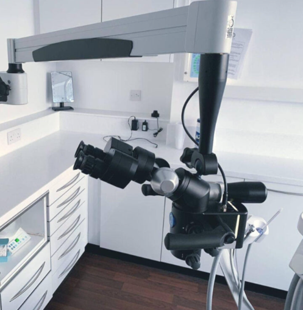

Technology
Advanced Equipment for Precise, Comfortable Treatment
CBCT Imaging & Diagnostics

We are qualified to prescribe and review 3D CBCT imaging. This provides precise 3D views of root of teeth for accurate diagnosis and planning—minimising guesswork and improving outcomes.
- High-resolution 3D visualisation
- Targeted field of view to reduce exposure
- Improved detection of complex anatomy
Diagnosis
Operating Microscope
All root canal related procedures are undertaken using a dental operating microscope. Microscopic magnification and illumination allow us to treat fine, complex canals with maximum precision while preserving healthy tooth structure.
- Enhanced visibility for intricate anatomy
- More conservative, precise treatment
- Improved long-term success
Employing the Latest Guidelines, Materials and Instrument Systems
The application of the latest internationally recognised guidelines to provide the highest standards of care.
The use of the latest scientifically researched, safe instruments and materials such as:
- Nickel Titanium instrumentation to streamline treatment, improve cleaning efficiency, reduce unwanted outcomes
- Bioactive and Biocompatible to help improve healing and reduce irritation as a result of dental treatment.
Sterilisation & Safety Protocols
Comprehensive infection control protocols compliant with UK guidelines with continuous monitoring to ensure a safe clinical environment.
- Medical-grade sterilisation standards
- Traceable validation and monitoring
- Dedicated instrument workflows